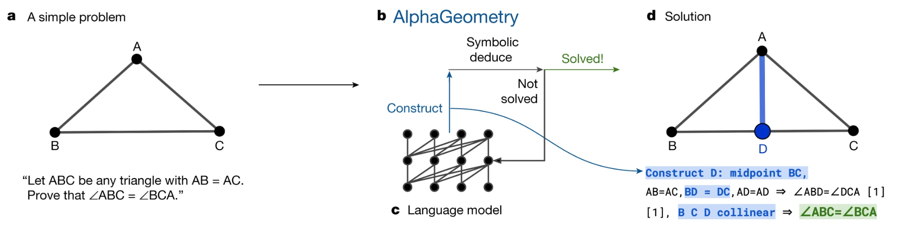

![Em 25 de maio de 1482, o impressor Erhard Ratdolt, de Veneza, lançou a primeira edição impressa (editio princeps) dos Elementos de Euclides — Praeclarissimus liber elementorum Euclidis in artem geometriae. O texto de Ratdolt foi baseado em uma tradução do árabe para o latim, presumivelmente feita por Abelardo de Bath no século XII, editada e anotada por Giovanni Compano (Campanus de Novara) no século XIII. A primeira edição impressa de Euclides foi o primeiro livro substancial a conter figuras geométricas, das quais incluía mais de 400. (Fonte: Bayerische Staatsbibliothek)](princeps.jpg)
No início do ano de 2024, fui convidado a proferir a primeira palestra do ano do Seminário Café Cultural, evento tradicional do Departamento de Matemática da UFBA. Como estava, naquele momento, revisando material para a disciplina “Geometria Euclidiana Plana” que lecionaria no primeiro semestre (creio que pela décima vez, mas sem nunca ter ficado plenamente satisfeito, devo confessar), pensei inicialmente em discorrer sobre um tópico qualquer de Geometria Euclidiana.
Mas a pesquisa que estava fazendo para atualizar meu material de ensino me fez descobrir tantos artigos recentes que ou versavam especificamente sobre Os Elementos, obra máxima de Euclides de Alexandria, ou que ao menos se referiam a ela sempre nos termos mais elevados, ainda que tratassem de temas atualíssimos, como Inteligência Artificial ou Demonstração Automática de Teoremas, que tive um lampejo: embora o Farol de Alexandria, maravilha da antiguidade construída na mesma época em que Os Elementos foi escrito, tenha já se apagado há muito tempo, o “Farol de Euclides”, ou seja, Os Elementos, nunca deixou de nos iluminar nesses mais de dois mil e trezentos anos!
Foi esse o mote usado para organizar minha palestra. Na oportunidade, posso dizer que obtive sucesso no Seminário, embora tenha sido superficial em alguns momentos, devido ao tempo curto. Aproveito esta oportunidade, aqui na Revista de Matemática Hipátia, para transformar aquela palestra em um artigo de divulgação, mantendo a mesma estrutura, mas me aprofundando um pouco mais em alguns pontos. Após uma breve exposição do contexto histórico no qual Euclides viveu e do conteúdo dos Elementos, discutiremos o que realmente Euclides estava tentando fazer, sempre atentos ao perigo do anacronismo, e depois passearemos por vários momentos nos quais a luz do Farol de Euclides se projetou na história da Matemática.
O título “Elementos” (Stoicheía, em grego) carrega uma profundidade conceitual que transcende sua aparente simplicidade, evocando uma reflexão sobre os fundamentos do conhecimento geométrico. A etimologia da palavra grega stoicheion (elemento) revela uma multiplicidade de significados que enriquecem a interpretação do tema. Segundo De Simone (Simone 2020), stoicheion pode se referir a uma letra do alfabeto, representando os componentes básicos da escrita, a uma forma geométrica simples ou, ainda, aos elementos físicos clássicos — terra, ar, fogo e água — conforme a tradição filosófica grega.
Essa escolha lexical sugere que “Elementos” não apenas designa os blocos de construção fundamentais da geometria, mas também posiciona a obra como uma espécie de “marco zero” do pensamento geométrico. A interpretação de “Elementos” como um “ABC da geometria” também é possível, indicando que os conceitos apresentados são essenciais e fundacionais, análogos aos rudimentos de qualquer sistema estruturado de conhecimento. Por outro lado, existe a possibilidade de uma ironia sutil embutida no título, pois Os Elementos é uma obra incrivelmente sofisticada quando considerada em seu todo.
O impacto duradouro dos Elementos pode ser melhor compreendido ao situar a obra em seu contexto histórico, por volta de 300 a.C., durante o período helenístico. Esse momento sucede as conquistas de Alexandre, o Grande, e caracteriza-se por um declínio relativo do poder político grego, contrastado por um florescimento intelectual notável. Nesse cenário, a matemática e a filosofia gregas já haviam sido moldadas por pensadores seminais como Tales de Mileto, Pitágoras, Zenão de Eleia — cujos paradoxos desafiaram concepções sobre o infinito e o movimento —, Demócrito, Platão e Aristóteles. A emergência de Euclides nesse período consolida um legado de rigor lógico e sistematização do conhecimento geométrico.
O período helenístico foi marcado por avanços significativos em matemática e física, com figuras como Arquimedes e Apolônio contribuindo para o desenvolvimento de conceitos que permanecem fundamentais. A longevidade dos Elementos, cuja relevância persiste após mais de 2.300 anos, evidencia sua importância como um marco na história do pensamento matemático. A obra não apenas codificou o conhecimento geométrico de sua época, mas também estabeleceu um modelo de rigor dedutivo que influenciou disciplinas científicas por séculos.
Euclides, figura central dessa narrativa, é conhecido principalmente por sua associação com Alexandria, no Egito, um dos maiores centros culturais do mundo antigo. Fundada por Alexandre e governada pela dinastia ptolomaica, Alexandria era um polo cosmopolita, caracterizado por sua diversidade cultural e por um traçado urbano planejado, com ruas dispostas em um sistema de grade que refletia princípios geométricos (Fig. 1). No coração dessa cidade, o Museu — ou Templo das Musas — funcionava como uma instituição de pesquisa, análoga a uma universidade moderna, reunindo intelectuais de diversas áreas. É nesse ambiente vibrante de intercâmbio acadêmico que Euclides provavelmente desenvolveu seu trabalho, beneficiando-se da colaboração com outras mentes brilhantes.
Embora detalhes biográficos sobre Euclides sejam escassos, sua conexão com o Museu de Alexandria reforça a imagem de um erudito imerso em um centro de aprendizado dinâmico. O contraste entre a durabilidade das ideias contidas nos Elementos e a efemeridade de construções físicas, como o Farol de Alexandria, do qual não sobram nem ruínas, apesar de ter resistido por séculos, já sublinha o impacto perene da obra. Enquanto monumentos materiais desapareceram, o sistema lógico e dedutivo dos Elementos continua a iluminar o estudo da matemática, atestando a força das ideias no transcorrer do tempo.
A recepção inicial dos Elementos no contexto da matemática grega antiga não foi marcada por uma aclamação universal imediata, mas por um processo gradual de reconhecimento de sua importância. Evidências históricas sugerem que a obra de Euclides, embora seminal, enfrentou críticas e debates em seus primeiros séculos. Um dos primeiros registros de interação com Os Elementos vem de Apolônio, um matemático que viveu pouco após Euclides. Nesta citação, tirada da obra Cônicas (185 a.C.), Apolônio parece ter questionado aspectos do tratamento dado por Euclides a certos lugares geométricos em um trabalho infelizmente perdido:
E quando os descobrimos, percebemos que Euclides não havia feito a síntese do lugar geométrico em três e quatro linhas, mas apenas um fragmento acidental dele, e mesmo isso não foi feito com felicidade. (Jones 2005)
Essa crítica inicial indica que Os Elementos não foi imediatamente aceito como uma obra-prima incontestável, mas sim submetido ao escrutínio acadêmico típico do período helenístico.
Outra menção a Euclides, dessa vez mais elogiosa, aparece no diálogo De Oratore de Cícero, escrito em meados do primeiro século a.C. Numa crítica ao excesso de especialização nas artes e ciências, um dos interlocutores indaga:
(…) Você supõe que a geometria sob Euclides e Arquimedes, a música sob Damão e Aristóxeno, a própria gramática quando Aristófanes e Calímaco trataram dela, eram tão divididas em partes que ninguém compreendia o sistema universal de nenhuma dessas ciências, mas diferentes pessoas selecionavam diferentes partes nas quais pretendiam dedicar seu trabalho? (Cic. de Orat. 3.132)
Posteriormente, por volta de 320 d.C., Papo de Alexandria emerge como um defensor de Euclides, respondendo às críticas de Apolônio e reforçando a relevância da obra:
Ele (Euclides) era extremamente justo e gentil com todos que eram capazes de ajudar a acrescentar algo à matemática... e nada ofensivo, um homem exato, mas não um fanfarrão — como esse sujeito (Apolônio). (Jones 2005)
Esse diálogo acadêmico, separado por séculos, reflete a continuidade do debate intelectual em torno dos Elementos e sua consolidação como referência fundamental. Contudo, o comentário mais significativo sobre a obra na antiguidade vem de Proclo, por volta de 450 d.C., aproximadamente sete séculos após a composição dos Elementos. O comentário de Proclo, focado especialmente no Livro I, tornou-se um texto influente para as gerações posteriores, moldando a compreensão da obra de Euclides. 1
Proclo oferece uma perspectiva amplamente aceita na antiguidade:
Euclides, que não era muito mais jovem que Hermótimo e Filipo, compôs Elementos, ordenando muitos dos teoremas de Eudoxo, aperfeiçoando muitos dos que haviam sido trabalhados por Teeteto e fornecendo provas rigorosas de proposições que haviam sido demonstradas com menos rigor por seus antecessores. (Jones 2005)
Assim, Euclides não teria criado ex nihilo os teoremas apresentados nos Elementos, mas agido como um compilador e organizador do conhecimento matemático de seus predecessores, como Eudoxo e Teeteto, por exemplo. A inovação central de Euclides, conforme enfatizado por Proclo, reside na sistematização do conhecimento e na apresentação de provas rigorosas dentro de uma estrutura dedutiva coerente, ou seja, no método.
Os Elementos constitui-se de uma coleção abrangente de fatos matemáticos, na maior parte geométricos ou descritos em termos geométricos, organizados em uma estrutura dedutiva na qual fatos mais complexos são demonstrados (explicados, justificados) através de fatos mais simples. Diferentemente das tradições da Babilônia e do Egito, que se concentravam em procedimentos práticos para resolver problemas específicos, como cálculos de áreas e volumes, a estrutura dos Elementos prioriza a demonstração de proposições (os fatos matemáticos) a partir de definições, postulados, noções comuns, que são os pontos de partida da investigação, e de outras proposições previamente demonstradas.
A obra abrange uma ampla gama de fatos, desde fundamentos geométricos até teoria dos números e geometria espacial, e está dividida em treze2 Livros:
Estabelece os fundamentos da geometria plana, abordando construções básicas, propriedades de triângulos, linhas paralelas e culminando na prova geométrica do Teorema de Pitágoras.
Explora a chamada “álgebra geométrica”, utilizando figuras como quadrados e retângulos para demonstrar identidades algébricas, como as envolvendo o quadrado da soma e a diferença de quadrados, embora o termo “álgebra geométrica” seja debatido entre historiadores. Este livro também introduz a razão áurea.
Focado em círculos, aborda propriedades de cordas, tangentes e ângulos inscritos, consolidando a compreensão geométrica de figuras circulares.
Trata da inscrição e circunscrição de polígonos regulares (como triângulos equiláteros, quadrados, pentágonos e hexágonos) em círculos, utilizando apenas régua e compasso, reforçando técnicas de construção geométrica.
Apresenta a teoria da proporção de Eudoxo, uma conquista teórica notável que oferece um método rigoroso para lidar com grandezas incomensuráveis, como a razão entre a diagonal e o lado de um quadrado (\(\sqrt{2}\)). Especula-se que essa teoria tenha surgido para resolver a chamada “crise dos irracionais” (embora seja discutível se essa “crise” realmente existiu), permitindo comparações de proporções sem atribuir valores numéricos.
Aplica a teoria da proporção à similaridade de figuras, incluindo triângulos e polígonos, e reformula o Teorema de Pitágoras em termos de figuras semelhantes em triângulos retângulos.
Deslocam o foco para a teoria dos números, tratada geometricamente, com números representados como segmentos de reta. O Livro VII introduz conceitos como divisibilidade, números primos e o algoritmo euclidiano para encontrar o máximo divisor comum. O Livro VIII explora progressões geométricas, enquanto o Livro IX inclui resultados fundamentais, como a prova da infinitude dos números primos e a construção de números perfeitos pares (iguais à soma de seus divisores próprios, como 6 e 28), vinculados aos primos de Mersenne.
Considerado altamente complexo, classifica diferentes tipos de grandezas incomensuráveis, como retas irracionais relacionadas a raízes quadradas, demonstrando a profundidade técnica da obra.
Passam à geometria sólida, abordando linhas, planos, ângulos sólidos, paralelepípedos (Livro XI) e o cálculo de volumes de pirâmides, cones e esferas por meio do “método da exaustão”, um precursor do cálculo integral (Livro XII).
Concentra-se na construção dos cinco sólidos platônicos (tetraedro, cubo, octaedro, dodecaedro e icosaedro). A escolha de concluir a obra com esses poliedros regulares, associados na filosofia platônica aos elementos fundamentais do cosmos, sugere possíveis influências platônicas na estrutura dos Elementos, embora isso permaneça objeto de especulação acadêmica.
No início de cada livro, são elencadas definições de termos que serão usados nas demonstrações subsequentes. Algumas das definições encontradas no Livro I são, por exemplo:
Um ponto é aquilo que não possui partes.
Uma linha é comprimento sem largura.
As extremidades da linha são pontos.
Linha reta é aquela que está posta igualmente entre suas extremidades.
Quando uma linha reta elevada sobre uma linha reta torna os ângulos adjacentes iguais entre si, cada um dos ângulos iguais é reto, e a linha reta sobre o outro é chamada perpendicular àquela em que está.
Um círculo é uma figura plana contida por uma linha tal que todas as linhas retas que caem sobre ele a partir de um ponto entre aqueles que estão dentro da figura são iguais entre si.
Além disso, no Livro I são elencados cinco postulados:
Fique postulado traçar uma reta a partir de todo ponto até todo ponto.
Também prolongar uma reta limitada, continuamente, sobre uma reta.
E, com todo centro e distância, descrever um círculo.
E serem iguais entre si todos os ângulos retos.
E, caso uma reta, caindo sobre duas retas, faça os ângulos interiores e do mesmo lado menores do que dois retos, sendo prolongadas as duas retas, ilimitadamente, encontrarem-se no lado do qual estão os menores do que dois retos.
e cinco noções comuns:
Coisas iguais a uma coisa são iguais entre si.
Se a coisas iguais foram somadas coisas iguais, as somas também serão iguais.
Se de coisas iguais forem subtraídas coisas iguais, os restos também serão iguais.
Coisas que coincidem entre si são iguais.
O todo é maior que suas partes.
Postulados e noções comuns são normalmente interpretados como fatos tão intuitivos que não precisam de demonstração e que baseiam, portanto, toda investigação subsequente. Mais adiante, outra interpretação será aventada. Os postulados tratam de fatos puramente geométricos, enquanto as noções comuns estão relacionadas a fatos gerais que se aplicam possivelmente a outras ciências.
A análise da estrutura das provas nos Elementos, conforme delineada por Proclo no século V d.C., oferece uma visão detalhada da abordagem metodológica de Euclides. Proclo identificou seis componentes distintos em uma proposição típica da obra, refletindo a organização lógica e sistemática que caracteriza o texto. Esses componentes são (com os nomes correspondentes em grego entre parêntesis):
A declaração inicial do que será provado ou construído, apresentando a proposição de forma geral.
A definição de um diagrama específico, com a atribuição de rótulos aos elementos relevantes, como pontos e linhas.
A reafirmação do objetivo da proposição, agora em termos da figura específica introduzida na exposição.
A adição de novos elementos geométricos, como pontos, linhas ou círculos, necessários para desenvolver a prova.
A descrição passo a passo do argumento que estabelece a veracidade da proposição, referindo-se a definições, postulados, noções comuns e resultados anteriores.
A reafirmação da proposição original como provada, encerrando a demonstração.
Essa estrutura é exemplificada na primeira proposição do Livro I, que propõe a construção de um triângulo equilátero a partir de um segmento de reta dado:
Sobre uma linha reta finita, construir um triângulo equilátero.
Seja \(AB\) a linha reta finita dada.
Assim, deve-se construir um triângulo equilátero sobre \(AB\).
Com o centro \(A\) e com distância \(AB\) se descreva (Post. 3) o círculo \(BCD\); e com o centro \(B\) e com distância \(BA\) se descreva o círculo \(ACE\). Do ponto \(C\), onde os círculos se cortam reciprocamente, se tracem (Post. 1) para os pontos \(A\) e \(B\) as retas \(CA\) e \(CB\).
Sendo o ponto \(A\) o centro do círculo \(BCD\), \(AC\) é igual a \(AB\) (Def. 15). E sendo o ponto \(B\) o centro do círculo \(CAE\), \(BC\) é igual a \(BA\). Mas foi provado que \(CA\) é igual a \(AB\). Logo tanto \(CA\) como \(CB\) são iguais a \(AB\). Mas as coisas que são iguais a uma terceira são iguais entre si (Noção Comum 1). Logo \(CA\) é igual a \(CB\). Logo as três retas \(CA\), \(AB\) e \(BC\) são iguais.
Por consequência, o triangulo \(ABC\), construído sobre a linha reta finita dada \(AB\), é equilátero.
Esse mesmo esquema é seguido, com poucas exceções, ao longo dos treze livros. Euclides distingue dois tipos de proposições: problemas, que têm o objetivo de demonstrar a possibilidade de construir certos objetos, como o triângulo equilátero no caso acima, e teoremas, que visam estabelecer certos fatos, como por exemplo a Proposição I.47 (o Teorema de Pitágoras). A estrutura da demonstração é a mesma em ambos os casos, mas há pequenas variações de linguagem. Por exemplo, emprega-se o modo imperativo 3 para na enunciação de problemas (“Construa um triângulo…” ou “Construir um triângulo…”) e o modo indicativo nos teoremas (“Em triângulos retângulos, o quadrado do lado que subtende o ângulo reto é igual aos quadrados dos lados que contêm o ângulo reto”). Também os problemas terminam com a expressão “o que era preciso fazer” (quod erat faciendum, em latim, abreviado por QEF), enquanto os teoremas se encerram com “o que era preciso mostrar” (quod erat demonstrandum, abreviado por QED).
Há uma extensa literatura sobre as origens, motivações e propósitos de tal estrutura demonstrativa, com visões por vezes contraditórias. Algumas pontos, entretanto, parecem certos:
A redundância das hipóteses e teses e o uso de uma linguagem formulaica, repetitiva, facilita a memorização das proposições.
O diagrama que aparece na exposição tem uma função essencial, sendo uma característica inconfundível dos Elementos, mesmo que a necessidade de figuras para a demonstração de fatos gerais tenha sido questionada desde a antiguidade, pois elas representam apenas casos particulares das proposições e ainda são desenhadas de maneira necessariamente imperfeita.
A etapa de construção isola o aspecto criativo do argumento, na medida em que introduz novos objetos que serão utilizados decisivamente na etapa de demonstração.
A interpretação dos Elementos pode ser obscurecida pelo anacronismo, isto é, pela tendência de julgá-los com base nos padrões modernos de lógica matemática e sistemas axiomáticos, desenvolvidos principalmente nos séculos XIX e XX 4. Sob essa perspectiva contemporânea, Os Elementos apresenta aparentes lacunas e imperfeições. Por exemplo, as definições de Euclides, como a de um ponto como “aquilo que não tem parte” ou de uma reta como “comprimento sem largura”, carecem do rigor exigido em sistemas formais modernos, nos quais tais termos são frequentemente tratados como conceitos primitivos indefinidos. Além disso, análises contemporâneas revelam que Euclides ocasionalmente se apoia em suposições implícitas não declaradas em seus postulados ou noções comuns, muitas vezes tiradas das figuras, como propriedades de continuidade ou a ordem de pontos em uma reta. Por exemplo, o que garante que os dois círculos traçados na proposição detalhada na seção anterior de fato se intersectam?
Essa crítica, no entanto, levanta uma questão fundamental: estaria Euclides sendo descuidado pelos padrões modernos, ou estaria ele operando dentro de um paradigma intelectual distinto?
Uma interpretação alternativa, proposta pelo estudioso húngaro Árpád Szabó em (Szabó 1967), sugere que Os Elementos tem raízes menos na lógica formal aristotélica, ainda em desenvolvimento na época, e mais na tradição grega da dialética, caracterizada pela argumentação estruturada entre perspectivas opostas, como no método socrático. Szabó argumenta que a terminologia de Euclides reflete essa abordagem. Por exemplo, a palavra grega hypothesis (hipótese), usada por Euclides, não denotaria apenas uma suposição lógica, mas uma proposição consensual estabelecida como ponto de partida para um debate:
A palavra grega hipótese deriva da preposição hypo (sob, abaixo de) e do verbo tithesthai (por, colocar) e significa, de fato, aquilo que duas pessoas engajadas em uma conversa, dois adversários em um debate, mutuamente concordam como base e ponto de partida de seu debate. (…) O primeiro tipo de hipótese são as definições, as quais para os gregos eram circunscrições, dadas sem prova, de conceitos (noções) usadas em matemática. (Szabó 1967)
Assim, definições como a de ponto ou reta não visariam ao rigor lógico absoluto, mas sim delimitar os termos da discussão, estabelecendo um acordo sobre os conceitos fundamentais a serem explorados.
Na sequência, Szabó indaga:
Mas o que acontece se os disputantes não podem encontrar asserções mutuamente aceitáveis de onde começar? (…) Neste caso, não há base mútua aceitável para a discussão subsequente; e um dos adversários não pode começar de uma ‘hipótese’ mas apenas de uma asserção mais forte tomada como ponto de partida por ele — de um ‘axioma’. A palavra grega ‘axioma’ originalmente significando ‘petição’ (pedido, requerimento, exigência); um adversário requer que o outro aceite sua asserção como ponto de partida do debate.
A palavra grega para postulado é aitemata, significando literalmente ‘demanda’, ‘pedido’, sendo portanto quase um sinônimo de ‘axioma’. Mas se postulados são asserções mais fortes que um adversário demanda do outro, o que haveria de tão forte assim nos postulados de Euclides? Não é intuitivamente óbvio que seja possível traçar uma linha reta entre dois pontos ou um círculo com centro e raio dados?
Para Zenão de Eleia e outros filósofos da escola eleática, os quais questionavam a coerência de conceitos como movimento e divisibilidade através de vários paradoxos engenhosos, como o paradoxo de “Aquiles e a Tartaruga” (Fig. 2), a resposta poderia ser: “Não, não é óbvio, e mesmo que o fosse, tratando a matemática de verdades eternas, demonstrações não deveriam invocar a ideia de movimento”.
Assim, os três primeiros postulados seriam exigências para aceitar a possibilidade de construções geométricas fundamentais, utilizando ferramentas como régua e compasso:
A única maneira de tornar as construções geométricas teoricamente possíveis é admitindo ao menos três tipos de movimentos que são indispensáveis para a produção das formas geométricas mais simples (linhas retas, círculos e seus pontos de interseção).(…) Eles são realmente demandas (aitemata, postulados) e não acordos (homologemata), pois eles postulam movimento [que é inaceitável para os Eleatas].(Szabó 1978)
Em resumo, os postulados funcionam como condições para viabilizar o discurso geométrico, e não como verdades intuitivamente óbvias.
As noções comuns (koinai ennoiai), por sua vez, abordam princípios gerais de igualdade e magnitude, que também poderiam ser questionadas no contexto filosófico da época:
Ao contrário, todas as propriedades afirmadas da relação [de igualdade] deveriam ser vistas (ao menos para os Eleatas) como autocontraditórias. Não é nada evidente como duas coisas distintas (i.e. coisas que não são as mesmas) podem jamais ser ‘iguais uma a outra’.(…) Os Eleatas estavam dispostos a conceder apenas que uma coisa possa ser igual a si mesma, não que ela pudesse igualar outra coisa. (Szabó 1978)
Ou seja, filósofos eleáticos poderiam questionar a igualdade de entidades distintas ou a relação entre o todo e suas partes, especialmente considerando paradoxos envolvendo o infinito. Na matemática moderna, por exemplo, conjuntos infinitos desafiam a noção de que o todo é maior que a parte, como demonstrado pela correspondência biunívoca entre um conjunto infinito e certos subconjuntos próprios. Assim, as noções comuns de Euclides seriam demandas baseadas na experiência comum com grandezas finitas, aceitas para permitir o discurso matemático.
Mais recentemente, e numa direção semelhante, Novaes afirma em The Dialogical Roots of Deduction (“As Raízes Dialógicas da Dedução”) (Novaes 2020) que
Podemos assim dizer que a demonstração [em Euclides] representa um ‘diálogo’ entre o autor do texto e seus leitores, os quais são instruídos a levar a cabo certos procedimentos.
Ou seja, à medida que Euclides, o “provador” interessado em demonstrar uma proposição, vai descrevendo as etapas da construção e da demonstração, e o leitor, talvez até inicialmente “cético”, as vai reconstruindo mentalmente (ou mesmo fisicamente com régua e compasso), com a ajuda do diagrama, estabelece-se um diálogo ativo, bem ao estilo grego, produzindo um efeito persuasivo bem maior do que a mera leitura de um argumento puramente textual. Nesse processo dialógico, a existência do ponto de interseção entre os círculos traçados na Proposição 1, por exemplo, fica evidente, não sendo um problema de fato.
As objeções quanto ao uso de figuras em demonstrações também foram desafiadas através de uma análise detalhada do filósofo Kenneth Manders em “The Euclidean Diagram” (O Diagrama Euclidiano) (Manders 2008). Resumindo um longo argumento, Manders inicialmente lembra que, embora conclusões errôneas possam ser retiradas de figuras, isso muito raramente foi um problema na prática de dois mil anos de geometria euclidiana, o que sugere um uso controlado das figuras. A seguir, ele faz uma distinção entre propriedades que ele denominou co-exatas, tais como incidência entre retas e ordem entre pontos em uma reta, que não variam caso os dados da figura sejam ligeiramente perturbados, e as propriedades exatas, como medidas de segmentos e perpendicularidade, que variam. Como bem resume Santos de Jesus (Santos de Jesus 2023),
O principal erro nas objeções às demonstrações euclidianas foi assumir que qualquer afirmação era justificada pelo diagrama. Euclides não procede assim. Nos Elementos, uma propriedade exata nunca é extraída dos diagramas. Já as propriedades topológicas, as co-exatas, não dependem da precisão com que os diagramas são desenhados, senão do controle sobre a manipulação da figura, controle este que depende da estabilidade da prática matemática.
Após a crítica de Manders, outros pesquisadores propuseram maneiras de incorporar formalmente diagramas nos esquemas dedutivos (Mumma 2006; Avigad, Dean, and Mumma 2009).
Essas interpretações reconfiguram Os Elementos como uma obra menos voltada para a construção de um sistema lógico atemporal e mais focada em estabelecer um argumento estruturado com base em pontos de partida consensuais. Essa perspectiva destaca a natureza contextual da obra, enraizada nas práticas intelectuais de sua época, e oferece uma lente alternativa para compreender sua estrutura e propósito.
A história das edições dos Elementos é muito complexa (como detalhada em (Risi 2016) e (Wardhaugh 2021)), mas um breve resumo é necessário para se entender o alcance do Farol de Euclides. Na Antiguidade Tardia, uma edição comentada por Teon de Alexandria, cuja filha Hipátia dá nome a esta revista, tornou-se amplamente influente. Esse momento coincide com o declínio de Alexandria e a ascenção de Constantinopla (Bizâncio) como centro do mundo helenístico. Uma lindo exemplar bizantino de 888 d.C., um livro em pergaminho que pertenceu a Aretas de Patras, é o mais antigo manuscrito grego dos Elementos com uma data estampada na capa. Uma tradução do grego para o árabe foi realizada por al-Hajjaj no século IX. Estudiosos do mundo islâmico não apenas preservaram o texto, mas também o expandiram com novos comentários e interpretações, enriquecendo seu conteúdo. Nos séculos XI e XII, a transmissão dos Elementos para a Europa Ocidental foi mediada por tradutores como Adelardo de Bath, que, viajando para regiões como Espanha e Sicília, traduziram versões árabes para o latim. Esse processo reintroduziu a obra no contexto europeu, onde ela se tornaria uma pedra angular do pensamento matemático medieval.
A invenção da imprensa no século XV revolucionou a disseminação dos Elementos. A primeira edição impressa, baseada numa manuscrito anterior composto por Campano de Novara, foi publicada por Ratdolt em Veneza em 1482, tornando a obra significativamente mais acessível (Fig. 3). Seguiram-se inúmeras edições, incluindo versões baseadas em manuscritos gregos redescobertos, como a de Simon Grynaeus de 1533, e traduções influentes em línguas locais, como italiano (Tartaglia, 1543), alemão (Xylander, 1562), francês (Forcadel, 1564), inglês (Billingsley, 1570), espanhol (Zamorano, 1576) e holandês (Dou, 1606). No final do século XVI, o matemático jesuíta Christopher Clavius produziu uma edição em latim amplamente utilizada, conhecida por seus extensos comentários. No século XVII, a edição de Pierre Hérigone (1634) introduziu símbolos matemáticos modernos, como o símbolo \(\perp\) para denotar perpendicularidade, refletindo um esforço para alinhar a obra com as convenções emergentes da matemática. A partir daí, surgiram outras edições apenas inspiradas pelos Elementos, mas com axiomas e demonstrações diferentes, como a influente Éléments de géométrie avec des notes (1794) de Legendre, cuja tradução para o português foi o primeiro livro de matemática impresso no Brasil (1809).
No começo do século XIX, François Peyrard, trabalhando com todos os manuscritos gregos disponíveis, inclusive o famoso manuscrito 190 da biblioteca do Vaticano (o qual fora “tomado de empréstimo” pelas tropas napoleônicos durante a invasão da Itália), compôs uma versão dos Elementos mais próxima do original, sem os acréscimos feitos desde o tempo de Teon. Posteriormente, por volta de 1880, o filólogo dinamarquês Heiberg continuou o trabalho de Peyrard, produzindo a versão mais aceita atualmente.
Muitas dessas edições buscavam “aperfeiçoar” Os Elementos, adicionando-se novos postulados e novas definições, alterando-se a ordem, o número e a redação de algumas proposições, tudo isso com o objetivo de se preencher as “lacunas” lógicas que eram percebidas, uma vez que o contexto cultural e filosófico que engendrou a obra já havia desaparecido. De Risi (Risi 2016) realizou o trabalho hercúleo de identificar os axiomas usados em cada uma das centenas de edições conhecidas no ocidente num período de quase mil anos, do manuscrito 190 até o começo do século XIX.
É necessário dizer, entretanto, que o entusiasmo gerado por essas edições entre os eruditos não era compartilhado por gerações de estudantes que eram obrigados a estudar geometria à maneira de Euclides, decorando enfadonhos teoremas, sem a motivação adequada e privados daqueles elementos de performance, diálogo e debate que caracterizavam o método grego. O matemático Sylvester chegou a afirmar que
Eu deveria me alegrar em ver (…) Euclides honrosamente arquivado ou enterrado “em lugar fundo, jamais tocado por nenhuma sonda” fora do alcance dos estudantes; (Wardhaugh 2021, 286)
Talvez a necessidade de tornar o estudo dos Elementos menos árido tenha levado Oliver Byrne a editar sua versão em 1847 (Fig. 4), celebrada pela abordagem visual inovadora. Byrne substituiu as tradicionais letras por diagramas e símbolos codificados por cores para representar ângulos e retas nas demonstrações, criando uma obra de grande apelo estético. Embora não tenha alcançado sucesso comercial em sua época, essa edição foi redescoberta recentemente por designers e bibliófilos, que a valorizam por sua singularidade visual e valor artístico.
Uma transformação significativa no pensamento geométrico ocorreu com a publicação de La Géométrie por René Descartes em 1637, que introduziu a geometria analítica. Ao utilizar coordenadas e álgebra para resolver problemas geométricos, Descartes ofereceu uma alternativa poderosa aos métodos sintéticos de Euclides. Embora não tenha substituído imediatamente a abordagem euclidiana, a geometria analítica proporcionou uma nova ferramenta conceitual, expandindo as possibilidades de análise geométrica e marcando uma transição para paradigmas matemáticos modernos. Segundo Thomsen (Thomsen 1933),
Enquanto antes de Descartes cada teorema exigia para sua prova alguma ideia nova, algum acaso feliz, como por exemplo o desenho de algumas linhas peculiares na figura, a geometria analítica fornece de uma vez por todas um meio infalível de completar a prova em cada caso em um número finito de etapas, apenas por diligência e rotina.
Não seria exagero ombrear Euclides e Descartes na história da matemática e das ideias em geral, tanto é assim que seus nomes se tornaram adjetivos de uso comum: euclidiano e cartesiano. Mas demorou um tempo para esse reconhecimento. Por exemplo, o filósofo Spinoza, inicialmente influenciado por Descartes, descreveu a filosofia cartesiana usando a mesma estrutura dedutiva euclidiana em seu livro Renati Descartes principia philosophiae, more geometrico demonstrata (1663)! Posteriormente, Spinoza empregaria de novo o método euclidiano em sua obra máxima, A Ética demonstrada à maneira dos geômetras (1677).
Outro exemplo do peso do legado euclidiano é mais uma obra emblemática: Princípios Matemáticos da Filosofia Natural (1687), de Isaac Newton. Newton era bem versado tanto na tradição euclidiana, quanto na então recente geometria cartesiana, tendo já desenvolvido seu cálculo na forma analítica de Descartes, porém, ainda assim, talvez para facilitar a divulgação (ou para dificultar, Newton era um sujeito esquivo), ele expôs seu sistema numa linguagem aparentemente euclidiana, na qual o cálculo se ocultava em expressões como “razões finais” de “quantidades evanescentes”.
Hoje em dia, essas duas maneiras de abordar a geometria são vistas pela maioria dos matemáticos como absolutamente complementares. Mas ainda há aqueles que veem uma primazia dos métodos geométricos mais puros, como pode-se notar nesta citação de Michael Atiyah:
Álgebra é a oferta feita pelo diabo ao matemático. O diabo diz: “Eu lhe darei esta máquina poderosa, e ela responderá a qualquer pergunta que você quiser. Tudo o que você precisa fazer é me dar sua alma: desista da geometria e você terá esta máquina maravilhosa.” …o perigo para a nossa alma está aí, porque quando você passa para o cálculo algébrico, essencialmente você para de pensar: você para de pensar geometricamente, você para de pensar no significado. (Needham 2021, xvii)
O quinto postulado de Euclides, conhecido como o postulado das paralelas, desempenhou um papel central na história da matemática, desencadeando um dos debates mais profundos e transformadores da disciplina. Durante séculos, matemáticos buscaram demonstrar que esse postulado, que estabelece que, dada uma reta e um ponto fora dela, existe exatamente uma reta paralela à primeira passando por esse ponto, poderia ser derivado dos outros quatro postulados. A percepção de que o quinto postulado parecia menos intuitivo levou a tentativas persistentes de provar sua dependência, sob a suposição de que ele não era verdadeiramente independente. Apesar desses esforços, nenhuma demonstração bem-sucedida foi alcançada.
No início do século XIX, uma mudança paradigmática ocorreu quando matemáticos como Carl Friedrich Gauss, János Bolyai e Nikolai Lobachevsky, trabalhando de forma independente, começaram a explorar as implicações de rejeitar o quinto postulado (Fig. 5). Eles desenvolveram geometrias não-euclidianas, nas quais o postulado das paralelas não se aplica, revelando a possibilidade de sistemas geométricos consistentes que descrevem espaços curvos, como os hiperbólicos e elípticos. Posteriormente, no mesmo século, Bernhard Riemann generalizou ainda mais essas ideias, estabelecendo os fundamentos da geometria diferencial. Modelos formais desenvolvidos por Eugenio Beltrami e Henri Poincaré demonstraram que essas geometrias não-euclidianas eram tão logicamente robustas quanto a geometria euclidiana, que descreve o espaço plano. Essa descoberta revolucionou não apenas a matemática, mas também a física, fornecendo ferramentas conceituais essenciais para desenvolvimentos como a teoria da relatividade geral.5
No final do século XIX e início do século XX, a busca por uma base axiomática rigorosa para a geometria intensificou-se, impulsionada pelo desejo de abordar as lacunas percebidas no sistema de Euclides. Um marco significativo nesse processo foi a publicação de Grundlagen der Geometrie (Fundamentos da Geometria), de David Hilbert, em 1899. Hilbert propôs um sistema axiomático formal que eliminava suposições implícitas presentes nos Elementos, como aquelas relacionadas à continuidade e à ordem dos pontos, estabelecendo a geometria em uma estrutura lógica mais robusta. Sua abordagem tornou-se um modelo para a matematização rigorosa, influenciando profundamente o desenvolvimento da matemática moderna.
Outros matemáticos contribuíram com sistemas axiomáticos alternativos, cada um oferecendo perspectivas distintas sobre os fundamentos da geometria. Como disse Zeitler,
Parece que todo geômetra respeitável tem seu próprio sistema de axiomas e jura por eles. Sem um, você não é ninguém! (Zeitler 1990)
Por exemplo, Mario Pieri, um colaborador de Giuseppe Peano, elaborou não uma, mas duas axiomatizações da geometria euclidiana, uma delas (Punto e Sfera, de 1908) baseada apenas nas noções primitivas de ponto e equidistância 6. O famoso lógico Alfred Tarski mostrou em 1926, usando uma axiomatização inspirada na de Pieri, que a geometria euclidiana é consistente e completa, ou seja, qualquer proposição (formulada na linguagem de primeira ordem) pode ser provada ou refutada, ao contrário do que ocorre na aritmética (como resulta do Teorema da Incompletude de Gödel). Numa direção menos teórica e mais prática, G.D. Birkhoff concebeu em 1932 um sistema de axiomas simples o suficiente para ser usado no ensino escolar. Por fim, como apenas mais um exemplo de uma série infindável, G. Thomsen, dando continuidade à ideia de Felix Klein de unificar as diferentes geometrias recorrendo ao conceito de grupos de simetrias (Programa de Erlangen), organizou a geometria plana a partir do grupo das reflexões do plano.
O impacto duradouro dos Elementos reside em sua capacidade de levantar questões fundamentais que continuam a inspirar avanços na geometria e em outras áreas da matemática. A obra de Euclides não apenas forneceu um modelo inicial de sistematização dedutiva, mas também serviu como um catalisador para debates e inovações que moldaram o desenvolvimento da matemática por mais de dois milênios. Essa ressonância contínua evidencia o poder das ideias de Euclides e sua relevância ininterrupta no discurso matemático.
A busca por rigor na validação das provas dos Elementos de Euclides ganhou novo impulso com o advento da computação moderna. Um exemplo notável desse esforço é o trabalho Proof-checking Euclid (Beeson, Narboux, and Wiedijk 2019) no qual um sistema computacional de verificação de demonstrações foi usado para provar formalmente, usando uma variação dos axiomas de Tarski, todas as 48 proposições do Livro I dos Elementos. No processo, foram provados 235 teoremas no total, de modo que quase 200 teoremas extras foram necessários para cobrir as lacunas lógicas, o que foi chamado jocosamente de “Livro Zero” dos Elementos.

Mais recentemente, em 2024, o Google DeepMind anunciou o desenvolvimento do AlphaGeometry(Trinh et al. 2024), um sistema de inteligência artificial capaz de resolver problemas complexos de geometria em nível de Olimpíadas Internacionais de Matemática (IMO). O AlphaGeometry combina um modelo de linguagem neural, que sugere construções geométricas intuitivas, com um motor simbólico que verifica a consistência lógica das etapas propostas. Em testes realizados com 30 problemas geométricos da IMO (2000–2022), o sistema resolveu 25, superando significativamente sistemas anteriores, como o método de Wu (Chou 1988), que resolveu apenas 10, e aproximando-se do desempenho médio de medalhistas de ouro humanos (25,9 problemas).
A abordagem do AlphaGeometry ecoa, em espírito, os métodos construtivos de Euclides, particularmente na utilização de construções auxiliares, como adicionar pontos ou linhas para facilitar a resolução de problemas geométricos. Assim como Euclides empregava régua e compasso para construir figuras que sustentassem suas provas, o AlphaGeometry gera construções geométricas auxiliares, validadas por um motor simbólico que opera com regras lógicas formais. Esse processo híbrido, combinando intuição neural e rigor simbólico, representa uma ponte entre a tradição geométrica euclidiana e as capacidades computacionais modernas (Fig. [fig:AlphaGeometry]).
Outra conquista recente possibilitada pelos computadores são os programas de geometria dinâmica, como o GeoGebra, por exemplo, os quais permitem que as construções geométricas sejam modificadas interativamente. Ficam aqui algumas indagações (um tanto anacrônicas, talvez): Como Euclides, Arquimedes e Apolônio reagiriam a tais ferramentas? Será que Sylvester teria uma melhor apreciação de Euclides se tivesse experimentado o GeoGebra em sala de aula? Quantas cores Byrne usaria em suas construções?
Como discutido anteriormente, a análise da história da matemática, enfrenta o desafio recorrente do anacronismo, que consiste em interpretar obras do passado à luz de padrões e conceitos modernos. Pior do que isso, em muitos momentos, a história da matemática foi escrita, sobretudo por matemáticos, numa perspectiva presentista e paternalista, ou seja, como se o historiador do presente, no cume do progresso inevitável da matemática, observasse os antepassados tateando num labirinto de ideias turvas que só ele agora pode compreender na totalidade.
Em um artigo incendiário, publicado em 1975, o historiador Sabetai Unguru criticou abertamente essa perspectiva, argumentando que cada evento da história da matemática deve ser compreendido em seus próprios termos, respeitando o contexto filosófico, cultural e metodológico de sua época:
É verdadeiramente deplorável e triste quando um estudante da cultura e das ideias antigas ou medievais deve familiarizar-se primeiro com as noções e operações da matemática moderna, a fim de compreender o significado e a intenção dos comentaristas modernos que lidam com textos matemáticos antigos e medievais.(Unguru 1975)
Esse artigo provocou uma grande polêmica, da qual, pode-se dizer, Unguru saiu vitorioso, pois desde então iniciou-se uma tendência da história da matemática ser contada por historiadores profissionais, e não mais por matemáticos tornados historiadores.
Mais recentemente, o debate historiográfico tem buscado um equilíbrio. Em outro artigo igualmente inflamado, publicado em 2014, Viktor Blåsjö, questiona esse novo status quo:
Esta “ortodoxia aceita” molda o nosso campo e, no entanto, raramente ou nunca é submetida a uma análise crítica. Na minha opinião, a autoimagem dos historiógrafos modernos está muito inflada. Neste artigo pretendo mostrar que muitos dos argumentos a favor da suposta superioridade da historiografia moderna acabam por se resumir à confusão, à convenção e à falta de pensamento crítico, como se pode esperar de um consenso que nunca foi seriamente desafiado.(Blåsjö 2014)
Essa perspectiva contemporânea propõe integrar insights matemáticos modernos para iluminar textos históricos, sem desconsiderar seu contexto original. Esse meio-termo reconhece que, embora seja crucial preservar a integridade histórica e filosófica do período em que foram produzidas, ferramentas modernas podem esclarecer aspectos técnicos das obras antigas. Assim, a historiografia da matemática evolui em direção a uma abordagem que harmoniza o rigor analítico com a sensibilidade contextual, permitindo uma compreensão mais nuançada do legado de obras como Os Elementos.
Os Elementos de Euclides transcendem sua identidade como um tratado de geometria da antiguidade, consolidando-se como um pilar fundamental do pensamento ocidental. A genialidade da obra reside em sua organização dedutiva sistemática, que estabeleceu um paradigma para o raciocínio matemático que perdurou por mais de dois milênios. Ao estruturar proposições a partir de definições, postulados e noções comuns, Euclides criou um modelo de argumentação lógica que não apenas fundamentou a geometria, mas também influenciou disciplinas tão diversas quanto o direito, a filosofia e a programação de computadores. Essa abordagem, baseada na derivação passo a passo de conclusões a partir de premissas consensuais, tornou-se um alicerce do raciocínio estruturado, evidenciando a universalidade e a atemporalidade do método euclidiano.
Embora lógicos modernos identifiquem lacunas no sistema de Euclides — como suposições implícitas sobre continuidade ou o uso de intuições visuais em diagramas —, uma análise contextual, especialmente sob a perspectiva dialética proposta por Árpád Szabó, revela a riqueza da conquista de Euclides. Longe de ser apenas um exercício de lógica formal, Os Elementos podem ser vistos como um empreendimento dialético, enraizado na tradição grega de argumentação estruturada, que visava estabelecer pontos de partida acordados para o discurso geométrico. Essa interpretação realça a sofisticação da obra em seu contexto histórico, desafiando visões anacrônicas que julgam Os Elementos exclusivamente pelos padrões modernos.
A influência dos Elementos estende-se por mais de dois mil anos, moldando a matemática, a ciência e a filosofia. Desde sua preservação por estudiosos do mundo islâmico até sua redescoberta na Europa medieval, passando pelas inovações da imprensa e pelas reformulações axiomáticas do século XIX, a obra continuou a inspirar avanços intelectuais. No século XXI, sua relevância persiste em campos como a inteligência artificial, exemplificada pelo AlphaGeometry, cuja abordagem construtiva ecoa os métodos euclidianos. Assim, o estudo dos Elementos, o Farol de Euclides, não apenas ilumina a história da matemática, mas também projeta uma luz para a exploração de novos caminhos.
L1.7cm
Vinícius Mello nasceu em Salvador e obteve seu doutorado em Computação Gráfica no IMPA. Ensina matemática na UFBA e fica alegre sempre que pode usar o GeoGebra em suas aulas. Gosta de matemática, música e programação em exata proporção, podendo ser encontrado a (quase) qualquer momento fazendo ao menos uma dessas coisas.
Acidentalmente, destacam-se os desafios de preservar e interpretar um corpus matemático complexo em uma era com recursos limitados para transmissão de conhecimento, comparável à dificuldade de interpretar hoje uma obra do século XIV com base em fragmentos e comentários tardios.↩︎
Dois livros adicionais sobre geometria espacial, considerados apócrifos, aparecem em manuscritos antigos.↩︎
em grego, normalmente traduzido para o infinitivo em português.↩︎
O prof. Papini deu sua visão sobre este desenvolvimento na edição anterior desta revista (Papini2024?) (N. do E.).↩︎
É bem verdade, entretanto, que o desenvolvimento da geometria projetiva, na qual não existem retas paralelas, desde ao menos o século XVII com Desargues e Pascal, até o final século XIX, já prenunciava que a geometria euclidiana não é absoluta.↩︎
Após a palestra, o prof. Thierry Lobão mencionou uma axiomatização semelhante, baseada nas noções primitivas de esfera e inclusão, apresentada por Edward Huntington em 1913.↩︎